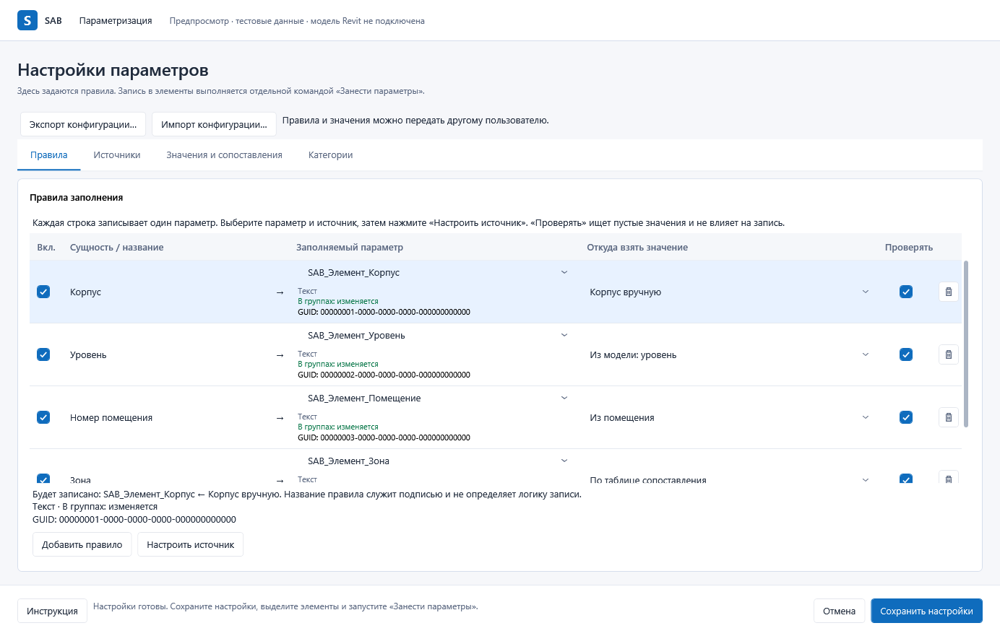
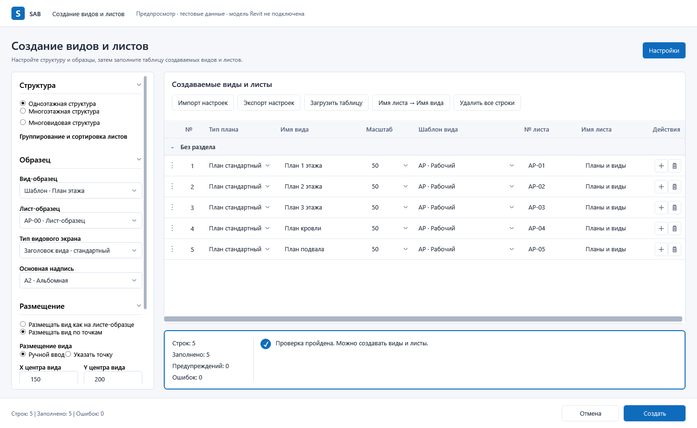
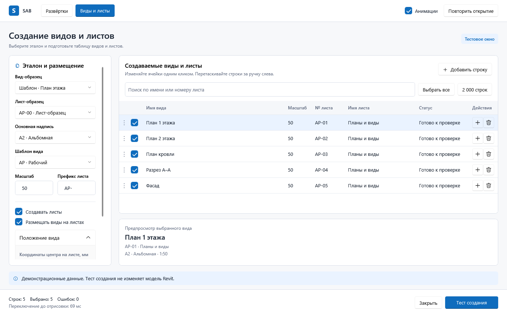

SAB · новый Fluent Light
Два новых представления на основе исходного плагина. Из вашего примера взяты оформление, кнопки, иконки, таблицы и композиционные приёмы. Состав функций, поля, значения и команды — из кода SAB. Версия 0.2, результат ещё ожидает утверждения.
Параметризация
Четыре реальные вкладки. Сохранены включение правила, сущность, параметр назначения с метаданными, источник, обязательность проверки, действия, конфигурация и категории. Высота строки учитывает тип, поведение в группах и GUID/ID. Рамки редакторов видны при редактировании, а не вокруг каждой ячейки.

Создание видов и листов
Реальные настройки структуры, образцов, размещения и копирования слева. Все исходные колонки и группировка сохранены. Под таблицей — исходная валидация, а не выдуманный предпросмотр из картинки. Команды добавления и удаления строк, импорта/экспорта и переноса имён сохранены.

Ваш визуальный образец
Источник стилистики; его демонстрационное наполнение не копировалось в логику SAB.

Все 19 реальных WPF-снимков: вкладки, структуры, состояния и минимальные размеры
Границы проверки
Настоящие оконные классы, модели, VM и обработчики SAB, изолированная сборка Revit 2023/.NET Framework 4.8. Переданы синтетические DTO; Document и модель Revit не подключены. Создание элементов и транзакции не выполнялись. 144 dpi — рендер 150%, а не изменение системного масштаба Windows.
Исходные рабочие файлы SAB не изменены. Новый словарь написан с нуля, старые шаблоны не наследуются. 135 исходных XAML binding-атрибутов и 10 колонок видов/листов сохранены автоматически. Старые варианты 0.1 оставлены как история.